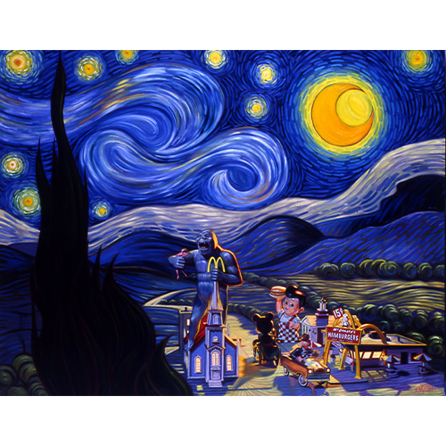
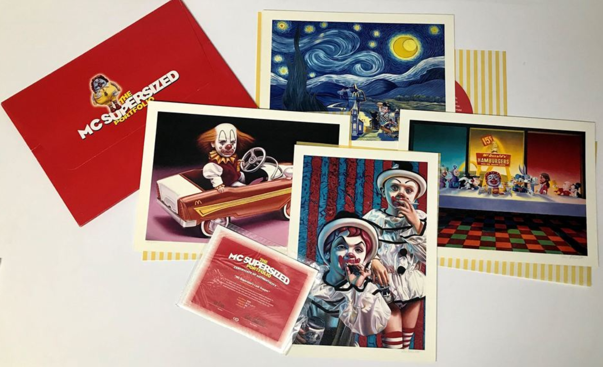
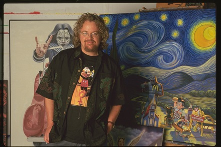

Notes
This work references Vincent van Gogh’s The Starry Night (1889).

A print after this painting appears at 1:30 in the Elms Lesters Painting Rooms YouTube video Last Exit to Brooklyn: New York's Counter Culture, available here, accessed April 13, 2026.
It also appears at 4:35 in the Elms Lesters Painting Rooms YouTube video Don't Do That, available here, accessed April 13, 2026.
This composition was later repurposed by the artist as one of the images included in The McSupersized Portfolio. The cited Artsy listing describes the release as a portfolio of four giclée prints featuring images used in the film Supersize Me. The set is listed as an edition of 100, with each print measuring 14 × 18 9/10 inches (35.5 × 48 cm); see the related portfolio on Artsy.

Ancillary Documentation
